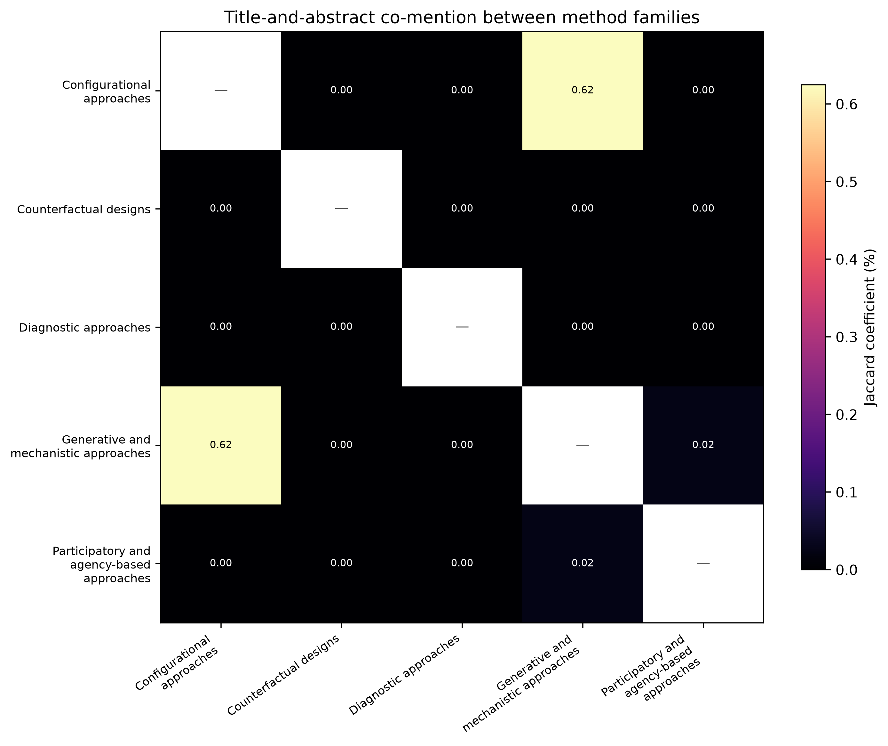

14 Integrating Methods and Causal Claims
Part II distinguishes causal claims about effects, configurations, and mechanisms, and the methods that can support them. Chapter 13 considered how to select those methods; this chapter considers how they can be combined without blurring their claims. A counterfactual design addresses a causal contrast. Process tracing investigates a proposed mechanism. QCA examines configurations of conditions. Commissioners commonly need more than one of these answers (Creswell & Plano Clark, 2018; Teddlie & Tashakkori, 2009). The issue is whether each component has a defined evidential job and whether the resulting findings can be interpreted together.
14.1 Patterns of integration in the literature
The bibliometric corpus can show whether core method families use a shared vocabulary. It cannot show, without reading the publications, whether those methods were used together in one evaluation. Figure 14.1 therefore reports title-and-abstract co-mention rather than integration. The analysis covers 18,520 unique works and 18,687 method–work pairs in the comparative core-method corpus. Theory of change and computational simulation are reported separately because they are, respectively, a contextual precursor and supporting modelling literature. Labels with materially different technical meanings are retained for discovery but excluded from this comparison. The Methods appendix describes the retrieval and filtering rules.

Explicit overlap is uncommon. The largest pair is configurational with generative and mechanistic approaches: 101 works name a method from both families, or 0.62 per cent of the works naming either family. This group includes the established combination of QCA and process tracing, where cross-case results inform within-case analysis (Rohlfing & Schneider, 2018). Generative and participatory approaches co-occur in two works (0.02 per cent). No other pairing occurs. These counts describe the terminology visible in titles and abstracts. They do not establish that the named methods were applied, much less integrated.
Lieberman (2005) formalised the nested analysis strategy, combining large-n statistical analysis with small-n case studies selected on the basis of the statistical results. Schneider & Rohlfing (2013) extend this to QCA, proposing formal protocols for combining set-theoretic analysis with process tracing.
Counterfactual methods have no cross-family co-mentions in this corpus. That is a result about visible terminology, not proof that evaluators never combine them with process tracing, QCA, or participatory methods. A second method may be named only in the full text; ambiguous method names may also create false matches. The absence of a co-mention can still guide the literature review: proposed combinations such as SCED with process tracing or randomisation inference with QCA cannot yet draw on a sizeable, readily identifiable body of publications. Their methodological case has to be made from the inferential tasks each component performs.
14.2 Integration designs
Three design types structure the combination of methods within a single evaluation. The mixed-methods literature distinguishes sequential, concurrent, and embedded (or nested) designs (Creswell & Plano Clark, 2018; Greene, 2007). The terminology below adapts these forms to causal inquiry.
14.2.1 Sequential integration
In a sequential design, one component precedes and informs the other. Schneider & Rohlfing (2013) set out protocols for combining QCA and process tracing. A configurational analysis can identify cases that are typical of a proposed pathway, deviant cases, or cases that discriminate between rival configurations; process tracing then investigates whether the proposed within-case mechanism occurred. The order matters because the cross-case analysis supplies a reason for selecting the cases, while the within-case inquiry examines a different claim. The reverse sequence is also possible. Process tracing can develop or revise propositions before a configurational analysis examines whether the relevant conditions distinguish outcomes across a defined case set. In either direction, the protocol should specify how the first component will affect case selection, theory development, or analysis in the second.
14.2.2 Concurrent integration
In a concurrent design, two or more components operate in parallel during the same evaluation period. The protocol needs to identify the distinct question for each component, the evidence each will collect, and the point at which their findings will be compared. A counterfactual component might assess whether a defined outcome changed, while participatory evidence identifies outcomes or implementation consequences that the pre-specified measure did not capture. Agreement does not make one source a validation of the other, because the components may address different claims. Divergence should prompt a review of the outcome definition, the causal pathway, the quality of the measures, and the limits of the participating evidence.
14.2.3 Nested integration
In a nested design, one component is embedded within another. Befani & Mayne (2014) show how contribution analysis and process tracing can be combined: the contribution story identifies the pathway and assumptions requiring scrutiny, while process-tracing tests assess selected links and alternatives. The two components do not have the same job. Contribution analysis keeps the inquiry connected to the full theory of change; process tracing provides a more demanding evidential assessment for particular claims. Simulation can also be nested as a supporting tool where it clarifies a theory of change, explores a feedback process, or tests the implications of stated assumptions. It does not generate empirical evidence for a causal mechanism simply by producing an output (Chapter 12).
Befani & Mayne (2014) demonstrate how process tracing and contribution analysis can be formally combined in a nested design, with diagnostic tests providing the evidential foundation for key links within the contribution story.
Table 14.1 summarises the three types.
| Design | Sequencing | When to use | Coordination challenge |
|---|---|---|---|
| Sequential | Component A precedes and informs Component B | When one component constrains case selection or hypothesis formation for another | Timing: Component A must be complete before Component B begins |
| Concurrent | Components A and B operate in parallel | When different components address different questions on the same cases | Interpretation: findings must be synthesised across components |
| Nested | Component B is embedded within Component A | When one component provides the framework and another provides evidential depth at specific points | Coherence: the embedded component must be compatible with the framing component |
14.3 Building an integration protocol
Integration should be designed before the separate components begin. The first task is to separate the claims. An evaluation may ask whether an intervention changed an outcome, whether a proposed mechanism operated, which contextual combinations were associated with success, and whether participants experienced changes not captured in the outcome measure. These are related questions, but they are not interchangeable. The protocol should identify the claim, evidence, method, and expected contribution of each component.
| Component | Claim addressed | Evidence and unit | How it informs the wider design |
|---|---|---|---|
| Counterfactual component | |||
| Mechanism component | |||
| Configurational component | |||
| Participatory component | |||
| Simulation component, if used |
The table is deliberately blank. It prevents a familiar failure of mixed-method design: collecting several forms of evidence and deciding only at the reporting stage what each was intended to establish. A component without a distinct claim may be unnecessary. A claim with no component may require the evaluation question to be narrowed or the design to be changed.
The second task is to define the handover between components. In a sequential design, the handover may be a case-selection rule, a set of hypotheses, or a revised theory of change. In a concurrent design, it may be a jointly agreed outcome definition, a shared chronology, or a scheduled comparison of interim findings. In a nested design, it may be the set of causal links selected for diagnostic testing. The protocol should specify who makes the handover decision, what evidence will be available at that point, and what happens if the first component produces a result that does not support the planned second component.
The third task is to keep analytical independence where it is needed. Evidence used to formulate a mechanism should not automatically be treated as independent confirmation of that mechanism. Researchers who collect participatory accounts should be clear about whether those accounts are evidence of experienced change, sources of hypotheses, or evidence for a causal link. Where the same document or informant contributes to several components, the report should say so. Apparent convergence is weaker when every component relies on the same underlying source.
14.3.2 Planning for disagreement
Disagreement between components should be anticipated in the protocol. The team should state whether a discrepancy will trigger further evidence collection, re-examination of an assumption, a revision of the theory of change, or a qualified conclusion. This avoids treating findings from a preferred method as decisive by default.
Disagreement can arise for substantive reasons. Outcomes may improve through a pathway not included in the original theory. An intervention may work in some contexts while failing in others. Participants may value changes that the primary outcome does not measure. It can also arise from measurement error, differences in time horizon, selective participation, or dependence between sources. These possibilities need to be considered before the final synthesis; otherwise the discussion of divergence becomes a post hoc explanation for an inconvenient result.
The final synthesis should therefore have three parts. It should report the conclusion from each component at the level it can support. It should identify where those conclusions reinforce, qualify, or contradict one another. It should then state the integrated conclusion and the remaining uncertainty. This order protects against a smooth narrative that conceals a weak component or an unresolved contradiction.
14.4 Resourcing and governance
Multi-method designs take more than the sum of their individual methods. The additional work includes agreeing definitions, maintaining a common chronology, coordinating fieldwork, and reviewing interim findings without allowing one component to shape the evidence collected by another. The budget should provide for these tasks. If it covers only separate data-collection streams, integration will be postponed until reporting, when it is difficult to revisit a missing observation or a poorly defined comparison.
Responsibilities also need to be clear. A technical lead may be responsible for the counterfactual analysis, another investigator for process tracing, and community partners for participatory work. Someone must nevertheless be responsible for the integrated claim: maintaining the protocol, identifying dependencies between sources, recording amendments, and ensuring that no component is described as evidence for a question it did not address. That role requires enough authority to challenge the preferred interpretation of any one component.
Data governance can limit integration. Administrative data may be available only in an aggregated form, while interviews contain identifiable accounts of the decisions that produced the observed pattern. The integration plan should identify what can be linked, who can access linked information, and what must remain separate. Protecting confidentiality may prevent some desirable cross-checks. The report should describe the resulting limitation rather than implying that all evidence was examined together.
14.4.1 Reporting an integrated design
Readers should be able to reconstruct the design without inferring it from a sequence of method sections. A report can begin with the causal questions and a diagram or table showing the role of each component. It should then describe the components separately, including their units, evidence, assumptions, and limitations. The synthesis section should cite the results from those components rather than introducing a new conclusion with no visible evidential route.
The report should distinguish three forms of statement. A component-level finding states what a particular analysis found. An integration finding states how two or more component findings relate. A programme conclusion states what those findings permit the evaluation to say for the decision at hand. This distinction is especially important where the components operate at different levels: an individual-level SCED cannot by itself establish a district-wide effect, and a district-level process trace cannot by itself establish the experience of all participants.
Visual displays can help, but only when they preserve those distinctions. An integration table may show the causal question, component, evidence, finding, and implication for each conclusion. A common chronology can show whether the proposed mechanism preceded the outcome. Neither should turn a provisional mechanism into a confirmed pathway through layout alone.
14.5 When not to integrate
Combining logics is not always warranted. The evaluation may have one narrow decision question that a well-specified design can answer without a second component. It may have insufficient time or access to conduct the components adequately. The proposed methods may make incompatible claims about the same evidence without a credible way to reconcile them. In these circumstances, a focused design with explicit limits is preferable to a nominally integrated study.
Integration is also inappropriate when it obscures a disagreement that the evaluation cannot resolve. If administrative data point in one direction and participant accounts in another, the responsible conclusion may be that the evidence is inconsistent and that a further decision requires new information. A combined narrative that selects the more convenient finding is not integration. It is a reporting choice that hides the uncertainty the evaluation was commissioned to assess.
14.6 Quality criteria for integration
Three criteria distinguish rigorous integration from ad hoc method mixing.
The first criterion is coherence. The components must rest on compatible assumptions. Contribution analysis and diagnostic process tracing can be combined because a contribution story identifies links and alternatives for which diagnostic tests are then specified. QCA and process tracing can also be combined: QCA identifies cross-case patterns, while process tracing examines a proposed mechanism within selected cases. Some pairings require particular care. Set-theoretic necessity claims and Bayesian probability updates answer different questions. An evaluation that uses both must not treat one as a translation of the other.
Coherence also requires a compatible level of inference. A case-level account can explain an outcome in that case; it cannot establish that the same mechanism was necessary across a population. A set-theoretic finding can describe a configuration in the observed case set; it does not identify the size of an intervention effect. The integration protocol should state where each component’s conclusion begins and ends, and the final synthesis should not extend a conclusion beyond the component with the relevant warrant.
The second criterion is transparency. The integration rationale must be reported explicitly. A multi-method evaluation report should state which question each component addresses, why it was chosen, and how findings from different components are brought together. Without that account, a report is a collection of findings rather than an integrated causal account.
Transparency includes the points at which the design changed. If an early component altered the cases selected for later investigation, the report should give the selection rule and the result of applying it. If field evidence required a theory of change to be revised, the earlier and revised propositions should be distinguishable. If data access prevented a planned comparison, the final claim should be revised accordingly. These details permit a reader to assess whether integration followed the protocol or whether the protocol was reconstructed after the findings were known.
The third criterion is the treatment of divergence. When components disagree, the disagreement may be informative. A process trace may support a mechanism that a QCA does not find to be necessary; the mechanism may operate in one pathway without being the only route to the outcome. A SCED may show no effect while an MSC story reports meaningful change. The outcome measure may not capture what participants describe, or the reported change may not be attributable to the intervention. The evaluator should report the disagreement and assess these alternatives rather than suppress it.
Divergence should not automatically be treated as a substantive discovery. It can also reflect different populations, observation periods, definitions, or sources of bias. The evaluator should first establish whether the components actually address the same claim. Where they do, the report should set out the alternative explanations for the discrepancy and the evidence bearing on each. Where they do not, the report should explain the different conclusions without forcing a single verdict.
14.7 Looking ahead
This chapter and the preceding one have addressed method selection and method combination. The next chapter turns to a different dimension of quality: biases, transparency, and reporting standards that apply across all small-n methods.